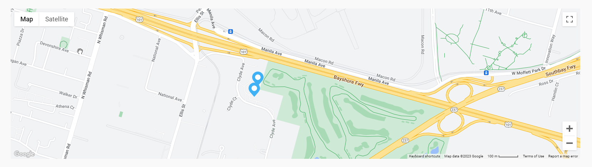
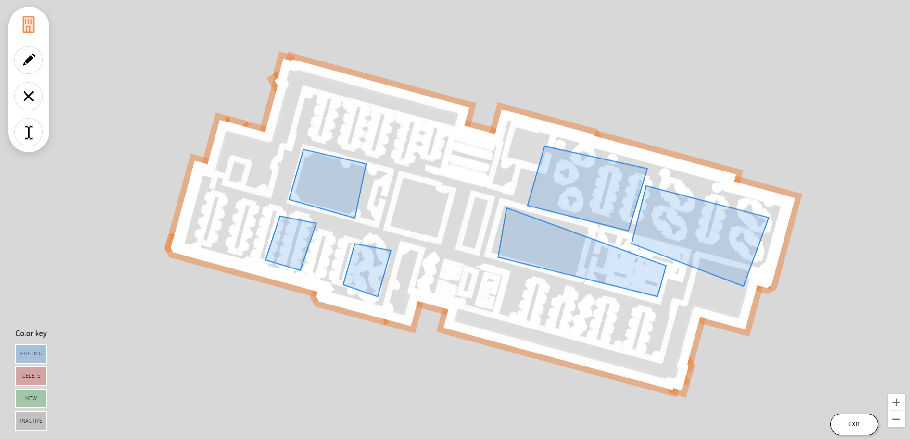

Manage venues (Labs)
Last updated July 26th, 2023
Once you’ve created one or more Venues, you can view the Venues page to see details about their status, find them on a map, define and manage zones, and edit or delete their information.
Venue status
At the top of the page, a Venue status section is shown with the number of rejected venues and the number of venues that are pending verification.
Depending on which stage of the setup process you’re in for each venue, you may see them in the following states:
- Saved — You haven’t yet submitted the venue for processing.
- Submitted — The venue has been submitted to a Samsung admin for processing.
- Processing — The Samsung admin is reviewing your venue.
- Rejected — Edits are required for your venue before you can submit it for processing again.
- Pending verification — The Samsung admin created an IMDF file from your venue, and needs you to verify that it’s correct.
- Returned — You resubmitted your venue for processing, and it’s awaiting review from a Samsung admin.
- Published — You verified the venue and published it. Real-time location data can now be seen on the console.
- Updated — You made some edits to your venue, but you haven’t resubmitted it for processing yet.
For details about the status of a specific venue, hover over its STATUS in the venue list.
Note
For Lite mode venues, you will only see Saved, Published, and Updated status.
Use the map
You can take the following actions on the map:
- Zoom — Double-click the map to enlarge it. You can also scroll or click in the bottom-right corner of the map to zoom in or out.
- Pan — Click and drag anywhere on the map to move it.
- Change view — Click Map or Satellite to change to each respective view.

View the venue list
Underneath the map, a list of your venues is shown. The list contains the following information about each venue:
- VENUE NAME — The friendly name given to the venue during creation. If the venue has been processed, you can click the name to see.
- ADDRESS — The address of the venue.
- BUILDINGS — The number of buildings associated with the venue.
- STATUS — The current status of the venue. Refer to Venue status for more details.
- CREATED — The date when the venue was first created.
You can also click a venue to see more details about it, including information about the last known locations of its devices and its associated immovable assets. To download a CSV file of either the device or immovable assets list, click the respective tab, then click ACTIONS > Download as CSV.
Manage zones for a venue
The real-time location service supports zone creation, which lets you define zones in a published venue. For example, if your retail store has different departments, you can mark the boundaries of each department on the floor plan.
To manage your zones using the editor:
- On the Venues page, select a published venue.
- Click Actions > Manage zones.
- In the dialog that opens, click Edit.
- The zone editor opens. Select a building, then select the floor to edit zones for.
If you previously defined zones, you can choose to deactivate or edit zones. Otherwise, you’re only able to edit zones. Once you save your changes, they’re immediately reflected in the real-time location service. You won’t need to get your venue reviewed by a Samsung admin.
Deactivate a zone
Note
This option is only available if your floor already has defined zones.
In the zone editor, click ZONE DEACTIVATION. A list of zones associated with the floor plan you selected is shown. On the floor plan, hover over a zone to see its name.
You can enable or disable individual zones according to your needs. Disabled zones are ignored by the real-time location service, and aren’t shown on the Venues or Analytics pages.
When you’re finished, click SAVE.
Edit zones
In the zone editor, click EDIT ZONES. A toolbar is shown with options to create a zone, delete a zone, and edit the name of a zone. You can use your mouse scroll wheel or the + and - buttons in the bottom-right corner to zoom in and out of the floor plan.
In the bottom-left corner, a color key indicates the zone colors and what they represent:
- Blue — A zone that currently exists on the floor plan.
- Red — The zone that is marked for deletion, which will be deleted after you save your changes.
- Green — A new zone to be added to the floor plan after you save your changes.
- Grey — A zone that has been deactivated.

To create a new zone:
- In the toolbar, click Add zone (pencil icon). The cursor changes to a green pencil when you hover inside the floor plan, and a red pencil when you hover outside of the floor plan. You can only create a zone while the pencil is green.
- Click an area of the floor plan to mark a point. This point acts as the corner of the zone, and you can click to mark additional points around the zone to create a boundary. When you’re done, close the zone by marking a point next to your first one.
- In the dialog that opens, enter a name for your new zone. Then, click OK.
Your new zone is then marked in green on your floor plan. In the bottom-right corner, click SAVE to confirm your changes.
To delete a zone:
- In the toolbar, click Delete zone (X icon).
- Click the zone you want to delete. Its color changes to red, indicating that it’s marked for deletion.
- In the bottom-right corner, click SAVE to confirm the deletion.
To edit the name of a zone:
- In the toolbar, click the Edit name (cursor icon).
- Click the zone you want to edit the name of.
- Enter the new name for the zone, then click OK.
- In the bottom-right corner, click SAVE to confirm the name change.
Update a venue
After your venue is approved by a Samsung admin, you can choose to update it anytime.
- On the Venues page, select a venue.
- Click ACTIONS, then Edit venue.
- Click EDIT to proceed with the edits. If you make any changes, your venue needs to be processed by a Samsung admin again.
Venue updates might include:
- Adding new buildings
- Adding new floors
- Adding new floor plans
Note
Venue address updates aren’t supported. To update the address of your venue, create a new venue instead.
Delete a venue
Make sure you identify the right venue to delete, as deleted venues and any information associated with them can’t be recovered.
- On the Venues page, select a venue.
- Click ACTIONS, then Delete venues.
- To confirm the deletion, click DELETE.
Is this page helpful?